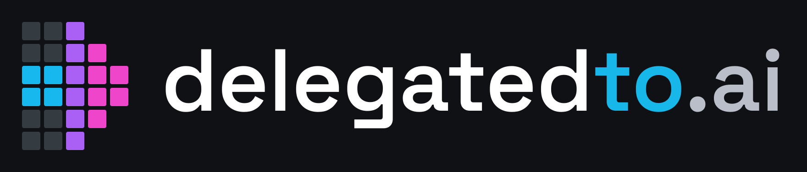
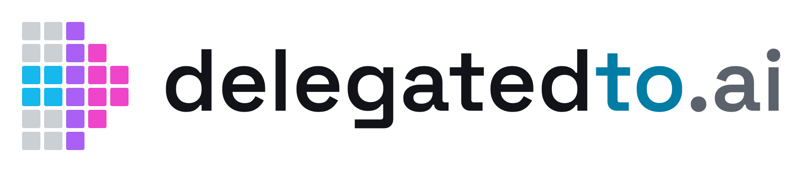

C3 / Focused Emergence · Space Grotesk Semibold · Version 1.0 · 16 October 2026


Space Grotesk, weight 600 / Semibold, applied to every character in delegatedto.ai. Lowercase, no spaces. Native font kerning; no additional letter spacing. Color boundaries: delegated / to / .ai. All logo lettering is converted to vector outlines, so SVG rendering does not depend on installed fonts. The actual font files and SIL Open Font License are included under fonts/.
Horizontal SVG canvas: 880 × 188 units. Symbol: five columns, six rows, with a two-row shaft; 20-unit square cells, 4-unit gutters, 2-unit corner radius. Symbol bounds: 116 × 140 units. Gap between symbol bounds and wordmark origin: 36 units. Wordmark type size: 96 units before conversion to outlines. Canvas includes 24 units of padding above, below and to the left.
| Element | Dark-background version | Light-background version |
|---|---|---|
| Main wordmark | #FFFFFF | #111318 |
| “to” | #18B7EA | #007DA5 |
| “.ai” | #B9BEC9 | #5C626B |
| Arrow cyan | #16B8ED | #16B8ED |
| Arrow violet | #AA60F4 | #AA60F4 |
| Arrow pink | #EE45CA | #EE45CA |
| Inactive matrix cells | #353C41 | #CBD0D5 |
| Preview background | #101114 | #FFFFFF |
The C3 raster concept was reconstructed as clean geometry. These hex values define the consistent production palette. The light-background version deepens the cyan wordmark and lightens the inactive grid. Monochrome versions omit inactive cells so the arrow remains distinguishable without color.
| Format | Size | Use |
|---|---|---|
| Outlined SVG | Resolution independent | Preferred for websites, layouts and print production |
| Transparent logo PNG | 4096 × 875 and 8192 × 1750 pixels | High-resolution raster export; filenames indicate width |
| Transparent symbol PNG | 512 × 512 and 2048 × 2048 pixels | Profile graphics and standalone symbol |
| Preview PNG | 1760 × 376 pixels | Opaque examples on light and dark backgrounds |
| TTF | Variable family and static Semibold 600 | Editable typography and web implementation, with included license |
Use logo-for-dark on dark backgrounds and logo-for-light on light backgrounds. “For dark” means light lettering; it does not mean a black background is embedded. Production SVG and PNG files are transparent.
Recommended starting sizes: horizontal logo at least 280 CSS pixels wide, preferably 320–400 pixels in a desktop header; standalone symbol at least 48 CSS pixels. These are practical starting points rather than formal legibility-test results. Use the symbol alone when the full name cannot fit. A tiny 16-pixel favicon would need a separately optimized simplification.
Keep at least one cell pitch (24 master units) of clear space around the artwork. Scale proportionally; do not stretch, rotate, recolor individual cells, or add shadows. Preserve the two-cell shaft thickness. For an HTML image, use alt="delegatedto.ai" when it identifies the site; use empty alt text if adjacent text already supplies that name.
For printing, prefer SVG and let the printer convert the sRGB palette using the intended paper and output profile. No CMYK or Pantone equivalence is implied. PNGs specify pixel dimensions, not a universal physical print size.
Font: Google Fonts Space Grotesk source. Preserve OFL.txt when redistributing the font. The outlined logo needs no font installation. The initial symbol was developed as a generated concept and redrawn for this production pack.